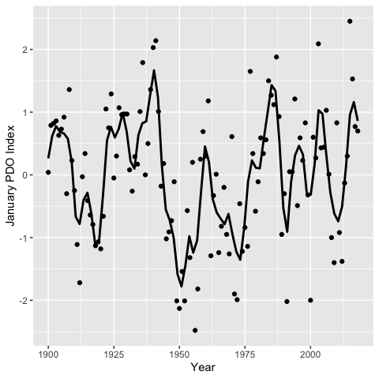

rpdo is an R data package of Monthly Pacific Decadal Oscillation (PDO) index values from January 1900 to September 2018.
The function pdo_download() scrapes the most recent data from http://research.jisao.washington.edu/pdo/PDO.latest.
Demonstration
library(rpdo)
library(ggplot2)
data <- rpdo::pdo
data <- subset(data, data$Month == 1)
ggplot(data = data, aes(x = Year, y = PDO)) +
geom_smooth(span = 0.1, se = FALSE, color = "black", method = "loess") +
geom_point() +
ylab("January PDO Index")
Installation
To install the latest release from CRAN
install.packages("rpdo")To install the developmental version from GitHub
# install.packages("remotes")
remotes::install_github("poissonconsulting/rpdo")To install the latest developmental release from the Poisson drat repository
# install.packages("drat")
drat::addRepo("poissonconsulting")
install.packages("rpdo")See Also
The rsoi package which provides El Nino/Southern Oscillation (ENSO) and Related Climate Indices.
Information
For more information see http://research.jisao.washington.edu/pdo/PDO.latest.
Contribution
Please report any issues.
Pull requests are always welcome.
Code of Conduct
Please note that the rpdo project is released with a Contributor Code of Conduct. By contributing to this project, you agree to abide by its terms.